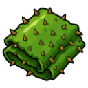
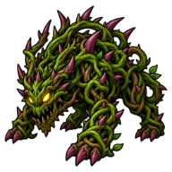

Briar Hide
Resource · Tier 4
| Property | Value |
|---|---|
| Value | 180 coins |
| Stacks | Yes |
Dropped by
| Monster | Level | Amount | Chance |
|---|---|---|---|
 Briarbeast | 22 | 1 | 60% |

Resource · Tier 4
| Property | Value |
|---|---|
| Value | 180 coins |
| Stacks | Yes |
| Monster | Level | Amount | Chance |
|---|---|---|---|
 Briarbeast | 22 | 1 | 60% |